Azure Logic Apps
Let's start with a few definitions and a quick tour around the core features of the Azure Logic Apps service. This overview should help you see whether Azure Logic Apps might be a good fit for your work.
What is a business process?
A business process or workflow is a sequence of tasks that produce a specific outcome. The result might be a decision, some data, or a notification.
One of the shoe-company scenarios is monitoring social media for reaction to a new product. The sequence of tasks would be: detect tweets about the product, analyze the sentiment, store a link to positive tweets, and email customer service for negative tweets.
Since the steps occur in a specific order, you'll often describe them with a flowchart. The following illustration shows a sample flowchart for the social-media monitor process. Notice how there are three types of operations: an event that starts the flow, processing steps that do most of the work, and a conditional operator that makes a decision.
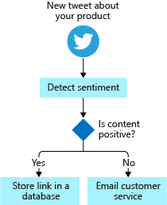
What is Azure Logic Apps?
Azure Logic Apps is a cloud service that automates the execution of your business processes. You use the workflow designer to arrange pre-made components into the sequence you need. The designer sends a definition of your workflow to the Azure Logic Apps execution engine. The execution engine launches your app when conditions are right and manages the compute resources needed to run it. The following illustration shows a high-level view of the steps.
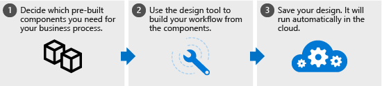
The power of Azure Logic Apps comes from the diversity of the pre-built components and their ability to work together. The components let you connect to hundreds of external services. The following illustration shows a few of the services you can use in your logic app workflow.
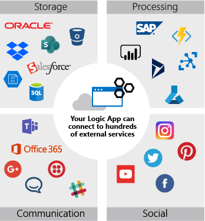
You build your app from the services you use in your business processes. The components can be connected in any pattern you need. You can add conditional statements and loops to add decision making to your app. The following illustration shows how you would combine external services to implement the social-media monitor workflow.
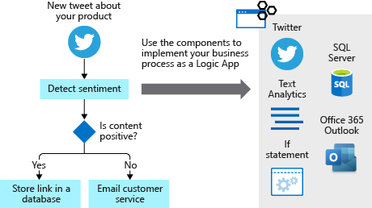
The Azure Logic Apps model is extensible. If there isn't a pre-built component for the service you need, you can create your own. You can also run custom code in an Azure function that you invoke from your app.
If we had to describe the goal of Azure Logic Apps in one word, we'd choose integration. Azure Logic Apps helps you join disparate services to implement a workflow. Your job is to use the workflow designer to arrange the components into the sequence you need. For most apps, you won't need to write any code and you can be up and running in minutes.
How Azure Logic Apps works
Now that we know the basics of Azure Logic Apps, let's see how it works behind the scenes. This information should help you decide whether Azure Logic Apps will work for you without any customization. In cases where you do need create custom components, you'll be able to determine how difficult it will be.
What is a connector?
A connector is a component that provides an interface to an external service. For example, the Twitter connector allows you to send and retrieve tweets, while the Office 365 Outlook connector lets you manage your email, calendar, and contacts. Azure Logic Apps provides hundreds of pre-built connectors that you can use to create your apps.
A connector uses the external service's REST or SOAP API to do its work. When you use a connector in your logic app workflow, the connector calls the service's underlying API for you. The following illustration shows the Twitter connector and its use of the Twitter REST API.
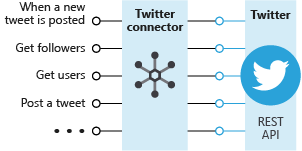
Custom connectors
You can write custom connectors to access services that don't have pre-built connectors. The services must have a REST or SOAP API. The requirement that the services provide an API shouldn't be too surprising since connectors are essentially wrappers around that underlying API.
To create a custom connector, you first generate an OpenAPI or Postman description of the API. You then use that API description to create a custom connector resource in the Azure portal. You can give your connector a name, an icon, and a description for each operation. The following illustration shows an example of the process. Notice that there's no coding involved.
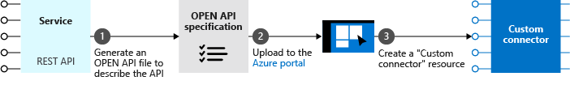
You can use your new connector in your own apps and share it with other people in your organization. You can also submit your connector to Microsoft for certification. Once your connector is certified, it will be included in the set of connectors available to all users.
What are triggers and actions?
Workflows are built from different types of tasks. For example, in our social media monitoring scenario, the workflow starts when a new tweet is posted. The workflow then analyzes the sentiment and makes a decision, based on the sentiment score. Azure Logic Apps uses the terms trigger, action, and control action for these concepts. These operations are the building blocks of Azure Logic Apps. The following diagram shows how to use each type of step in the social media monitoring app.
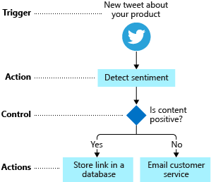
Let's be more specific about the definitions for trigger and action:
- A trigger is an event that occurs when a specific set of conditions is satisfied. Triggers activate automatically when conditions are met. For example, when a timer expires or data becomes available.
- An action is an operation that executes a task in your business process. Actions run when a trigger activates or another action completes.
A connector is a container for related triggers and actions. Let's look at a few examples.
The Twitter connector lets your logic app workflow interact with Twitter. The social media monitoring app can use a trigger from the Twitter connector to determine when new relevant tweets are available. The following diagram shows the Twitter connector with its trigger and actions:
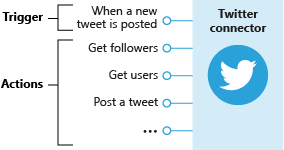
Next, we have the Dropbox connector. Suppose you're working with a small team on a project that stored shared data in Dropbox. You can build a workflow that detects when someone changes any files and sends a notification to the other team members. The following diagram shows the Dropbox connector with its triggers and actions:
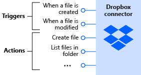
Finally, let's look at the Twilio connector. Most connectors offer both triggers and actions, but this connector only has actions. The Twilio connector is useful when you want to send text messages for notifications. For example, you could use the Twiliio connector in the Dropbox scenario to message team members when a shared file changed. The following diagram shows the Twilio connector and its actions:
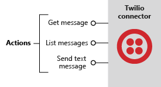
How to build workflows from triggers and actions
You build a workflow by choosing operations, specifically, a trigger and actions. A workflow must start with a trigger. You can then follow the trigger with as many actions as you need to implement your workflow. The following diagram shows the trigger and actions used in the social media monitoring app:
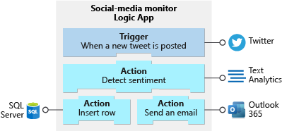
How do triggers and actions work together?
Triggers and actions are essentially function calls to an underlying API operation. Each operation has inputs and outputs. For example, the Twitter trigger named When a new tweet is posted takes in a search string and returns the tweets that contain that string. The Text Analytics action named Detect sentiment action takes a string as input and returns the sentiment score as a floating-point number. The following diagram shows these two operations:
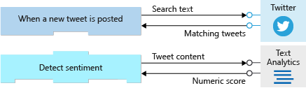
Azure Logic Apps automatically makes the return values available throughout the rest of the operations. This feature lets you pass the results from one operation as input to the next operation. The following diagram shows the data flow for the first two operations in the social media monitoring app.
The results or outputs from an operation are available to all subsequent steps:
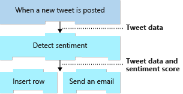
What are control actions?
Most workflows need to run different actions, based on the data that's processed. For example, a workflow might route an expense report to a different manager, based on the expense amount. In the social media monitoring app, the workflow needs to branch, based on a tweet's sentiment score. The following diagram shows the flowchart for the social media monitoring app and highlights the control logic:
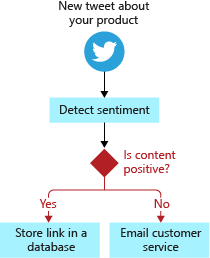
Control actions are special actions built-in to Azure Logic Apps that provides these control constructs:
- Condition statements controlled by a Boolean expression.
- Switch statements.
- For each and until loops.
- Unconditional branch instructions.
The following diagram shows the use for the condition statement in the social media monitoring app:
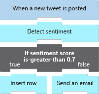
What is the workflow designer?
The workflow designer is a graphical tool for creating your workflows. The designer provides canvas surface where you add a trigger and actions to your workflow. For example, the social media monitoring app uses the trigger named When a new tweet is posted, a control action known as a condition, and actions named Detect sentiment, Insert row, and Send an email. The following screenshot shows the social media monitoring workflow in the designer:
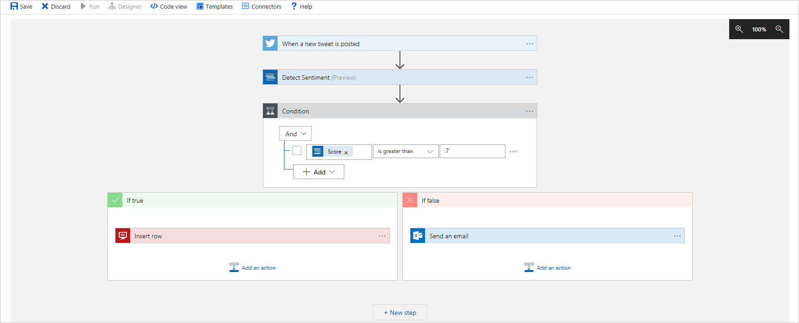
When to use Azure Logic Apps
Here, we'll discuss how you can decide whether Azure Logic Apps is the right choice for a workflow. We'll list some criteria that indicate whether Azure Logic Apps will meet your performance and functional goals.
Decision criteria
Azure Logic Apps helps you coordinate the flow of data through disparate systems. The cases where Azure Logic Apps might not be the best option typically involve real-time requirements, complex business rules, or use of non-standard services. Here's some discussion of each of these factors.
| Factor | Description |
|---|---|
| Integration | The key question to ask when you're considering Azure Logic Apps is "do I need to integrate services?" Azure Logic Apps works well when you need to get multiple applications and systems to work together. That's what they were designed to do. If you're building an app with no external connections, Azure Logic Apps is probably not the best option. |
| Performance | The next consideration is performance. The Azure Logic Apps execution engine scales your apps automatically. Azure Logic Apps can process large data-sets in parallel to let you achieve high throughput. However, they don't guarantee super-fast activation or enforce real-time constraints on execution time. If you're looking for low subsecond response time, then Azure Logic Apps may not be the best fit. |
| Conditionals | Azure Logic Apps provides control constructs like Boolean expressions, switch statements, and loops so your apps can make decisions based on your data. You can build highly complex and deeply nested conditionals into your logic app workflows. There are two reasons you might prefer not to. First, it's often easier to write conditional logic in code rather than using the workflow designer. Second, embedded business rules aren't easily sharable with your other apps. Some people like including complex business rules directly in their logic app workflows. Others think it's simpler to write something like an Azure function to encapsulate the conditional logic and invoke that function from all their apps. |
| Connectors | The last consideration is whether there are pre-built connectors for all the services you need to access. If so, then you're ready to go. If not, then you'll need to create a custom connector. If the service has an existing REST or SOAP API, you can make the custom connector in a few hours without writing any code. If not, then you'll need to create the API first before making the connector. |
Apply the criteria
Azure Logic Apps works best when you're integrating multiple services with some added control logic. The decision is often a judgment call though. Let's think about how to apply these criteria to our example processes.
Our fictional shoe company needed to monitor social media, move old videos to archive storage, and sell shoes online. Our goal was to decide whether these tasks were good candidates for Logic Apps. To make our decision, we should analyze each task using the four criteria we developed: integration, performance, conditionals, and connectors. The following table summarizes the results. The highlighted cells are discussed below.
| Integration | Performance | Conditionals | Connectors | Use Logic Apps? | |
|---|---|---|---|---|---|
| Social-media monitor | Integrates multiple services | Doesn't need near-realtime low latency | One simple conditional | Built-in connectors available for all needed systems | Yes |
| Video archive utility | Only needs to access one service, cloud storage | Doesn't need near-realtime low latency | Two simple conditionals | Built-in connectors available for all needed systems | Yes |
| Direct online sales | Integrates multiple services | Doesn't need near-realtime low latency | Multiple complex conditionals | Multiple custom connectors needed | Maybe |
There are a few interesting things to think about in this analysis.
- The video archive task is a good fit for Logic Apps even though it doesn't integrate multiple systems. Azure Logic Apps has a built-in timer trigger and an Azure blob connector that are perfect to implement this process.
- The online sales process would likely include complex business logic. For example, we might have different approval processes based on the purchase amount or different shippers based on the destination. Azure Logic Apps can easily handle these conditions. It's up to us whether we want to embed these business rules in our app.
- The online sales process would probably use a mix of built-in and custom connectors. We could use built-in connectors for email notifications and database access but would probably need a custom connector to talk to our payment processing service.
- The performance of Azure Logic Apps will work well for all the tasks. Some of them may process large amounts of data, but Azure Logic Apps scales automatically to handle high throughput or spikes in demand. None of these tasks require low latency response time. We'd need to have near-realtime constraints for that to be an issue.
Azure Logic Apps could work for all of these tasks. The online sales process is the only one where we'd want to weigh all our options. Azure Logic Apps would be a good choice if we had the resources to build the custom connectors we'd need.
Guidance summary
The following flowchart summarizes the key questions to ask when you're considering using Azure Logic Apps.
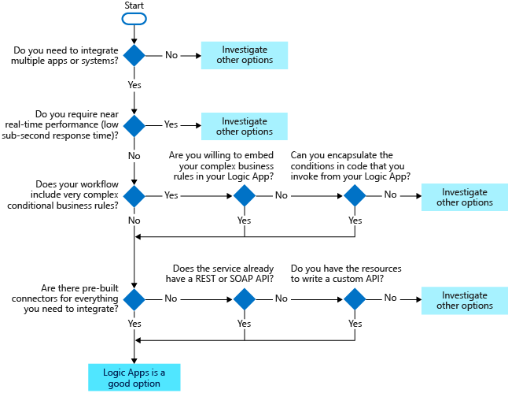